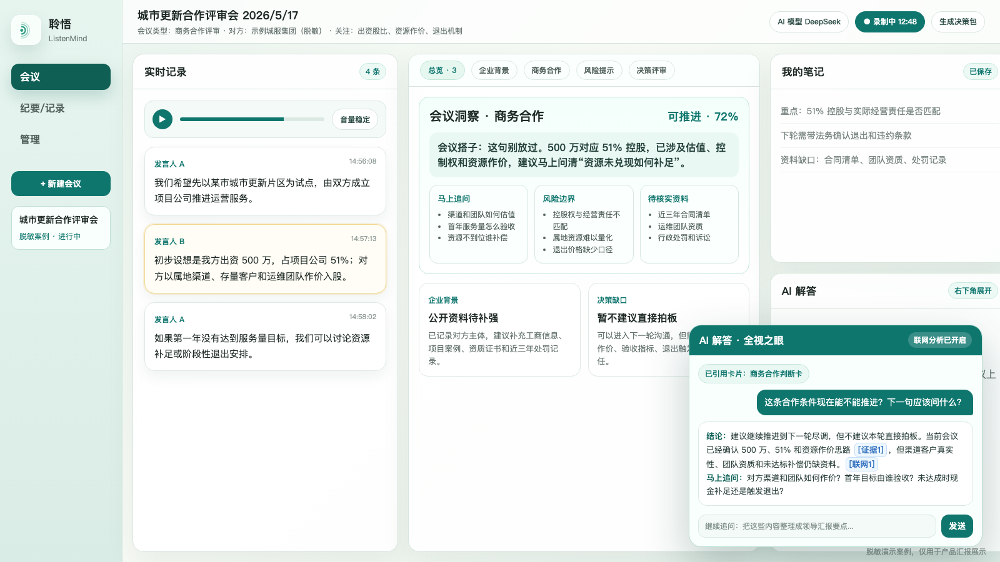
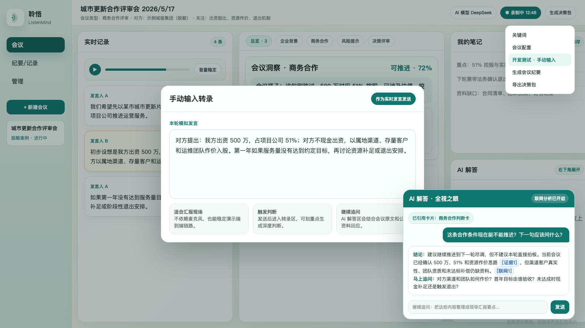
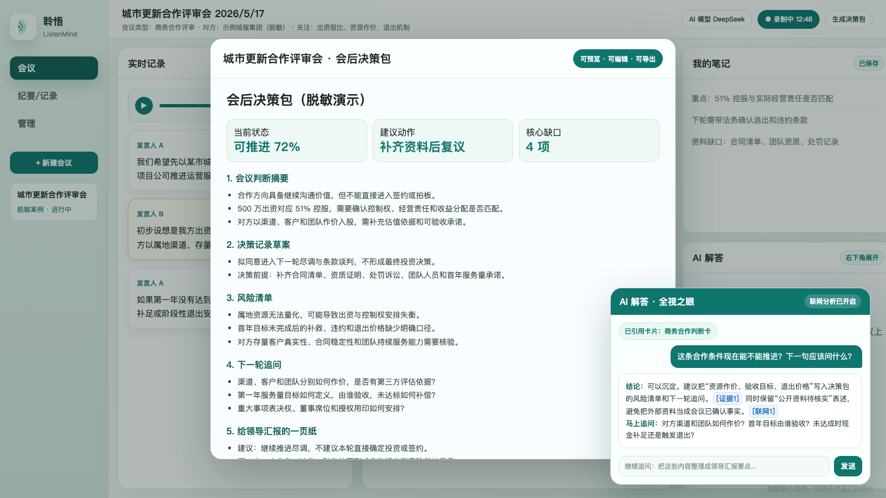

信息分散
会议发言、会前材料、对方公开资料、个人笔记分散在不同位置，现场难以形成完整判断。

在整体 AI 办公体系中的位置
这不是一个孤立的转录工具，而是围绕会议这一类高频办公场景， 把声音、文字、材料、公开资料和人工判断组织成可复用的工作资产。
业务痛点
会议发言、会前材料、对方公开资料、个人笔记分散在不同位置，现场难以形成完整判断。
金额、股比、责任边界、技术指标一旦快速掠过，会后再补问成本更高，甚至影响推进节奏。
会不会听重点、能不能看出风险，很大程度依赖个人经验，新人和跨岗位协同压力明显。
纪要、风险清单、待办、决策记录常常分开整理，会议中的判断依据难以复用和追溯。
项目能力
以下能力来自当前代码库和文档；展示页中的案例企业、数字和话术均为演示示意。
支持浏览器语音、云端 STT、macOS 本地 STT、手动输入转录，并通过 WebSocket 推送到工作台。
用户在转录区划选关键内容后，系统把它作为会议重点片段，进入上下文分析和追问流程。
按企业背景、商务合作、风险提示、技术判断、并购尽调、决策评审等栏目沉淀洞察。
填写对方企业后，后台准备公开资料；AI 解答和判断卡可结合外部资料进行核实补强。
基于会议类型、目的、关注点、对方主体和材料，生成追问清单、风险清单和资料缺口。
把当前会议状态分为“不足、可初判、可推进、可决策”，提示缺少哪些事实和风险闭环。
支持生成会议纪要、会议记录和会后决策包，汇总风险、追问、尽调资料、条款建议和汇报要点。
未来可接入更多办公室工作流、权限体系、材料模板和跨会议知识复用，本页按路线图方式呈现。
工作流展示
录入会议类型、目的、地点、参会人员、关注点、对方企业，导入会前材料。
自动准备追问清单、风险提示、谈判边界、资料缺口和场景检查表。
参会人划选关键发言，AI 结合上下文、判断卡和公开资料进行深度分析。
输出马上能问的问题、风险边界、待核实事实、是否可推进的判断依据。
形成纪要、会议记录、风险清单、待办、尽调资料清单和领导汇报一页纸。
核心界面
当会议谈到出资、股比、资源作价和退出边界时，系统帮助参会人员马上抓住应追问的事实缺口。
右下角 AI 解答区支持引用判断卡、开启联网分析，并用会议片段与公开资料回答“现在该不该推进”。
停止录制后可把判断卡、笔记和转录汇总为纪要、风险清单、尽调资料清单和领导汇报要点。


典型使用场景
价值总结
会议、卡片、纪要、记录、笔记进入统一检索入口，历史资料可复用。
关键发言结合上下文、公开资料和会议配置，减少只凭记忆判断。
从会前预案、会中追问到会后决策包，工作流节点更明确。
把个人经验转为可查看、可追溯、可复用的判断卡和材料包。
未来扩展
接入制度文件、项目档案、合同模板、历史纪要和授权范围，增强会议前后的资料支撑。
把判断卡进一步连接到待办、审批、接待、调研、督办和材料起草流程。
按领导、综合、业务、法务、财务等角色提供不同关注点和沉淀模板。
沉淀常见追问、风险边界、条款建议和决策前提，形成可搜索的会议判断知识库。